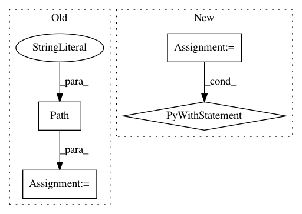

87f22614a3a97d93aaf570ba1c3eeefcbfdb8d5f,tests/python/pants_test/init/test_logging.py,,test_log_filtering_by_rule,#,42
Before Change
)
with temporary_dir() as tmpdir:
setup_logging_to_file(LogLevel.INFO, log_dir=tmpdir)
log_file = Path(tmpdir, "pants.log")
native.write_log(msg="log msg one", level=LogLevel.INFO.level, target="some.target")
native.write_log(msg="log msg two", level=LogLevel.DEBUG.level, target="some.other.target")
native.write_log(msg="log msg three", level=LogLevel.DEBUG.level, target="debug_target")
After Change
def test_log_filtering_by_rule() -> None:
with temporary_dir() as tmpdir:
ob = create_options_bootstrapper(
[f"--pants-workdir={tmpdir}", "--log-levels-by-target={"debug_target": "debug"}"]
)
// Do not set up a stdio destination, meaning that all messages will go to the log.
global_bootstrap_options = ob.bootstrap_options.for_global_scope()
with initialize_stdio(global_bootstrap_options):
native_engine.write_log(
msg="log msg one", level=LogLevel.INFO.level, target="some.target"
)
native_engine.write_log(
msg="log msg two", level=LogLevel.DEBUG.level, target="some.other.target"
)
native_engine.write_log(
msg="log msg three", level=LogLevel.DEBUG.level, target="debug_target"
)
loglines = (
Path(global_bootstrap_options.pants_workdir, "pants.log").read_text().splitlines()
)
assert "[INFO] log msg one" in loglines[0]
assert "[DEBUG] log msg three" in loglines[1]
assert len(loglines) == 2
In pattern: SUPERPATTERN
Frequency: 3
Non-data size: 4
Instances
Project Name: pantsbuild/pants
Commit Name: 87f22614a3a97d93aaf570ba1c3eeefcbfdb8d5f
Time: 2021-03-01
Author: stuhood@gmail.com
File Name: tests/python/pants_test/init/test_logging.py
Class Name:
Method Name: test_log_filtering_by_rule
Project Name: pantsbuild/pants
Commit Name: f7b260e965e277d62d2f54847671d06b1763fb21
Time: 2020-08-23
Author: 14852634+Eric-Arellano@users.noreply.github.com
File Name: src/python/pants/backend/python/rules/run_python_binary_integration_test.py
Class Name: RunPythonBinaryIntegrationTest
Method Name: test_sample_script
Project Name: pantsbuild/pants
Commit Name: 87f22614a3a97d93aaf570ba1c3eeefcbfdb8d5f
Time: 2021-03-01
Author: stuhood@gmail.com
File Name: tests/python/pants_test/init/test_logging.py
Class Name:
Method Name: test_file_logging